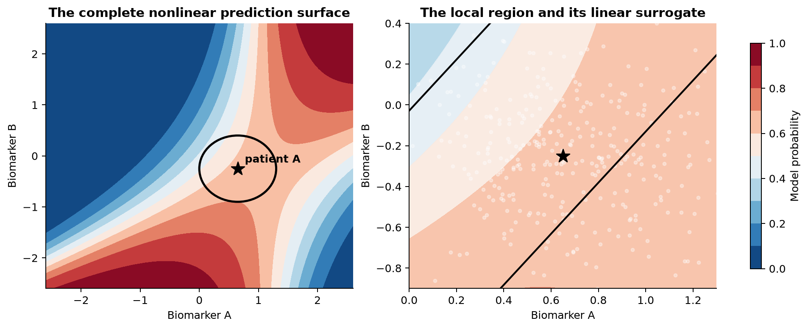
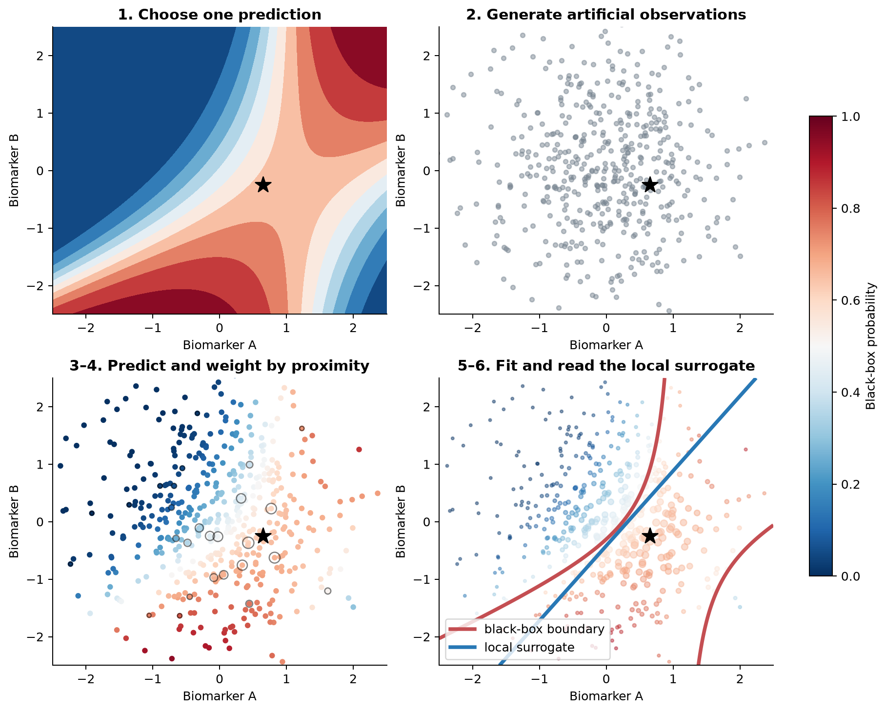
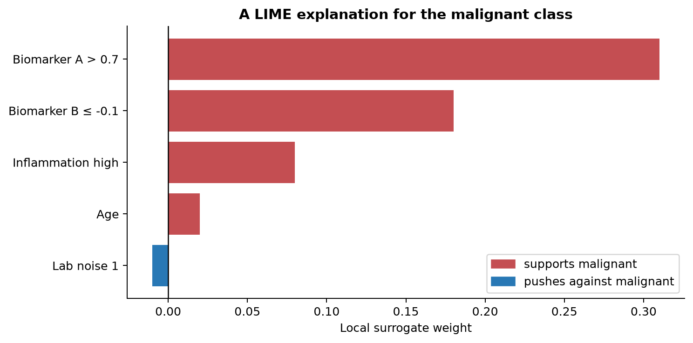
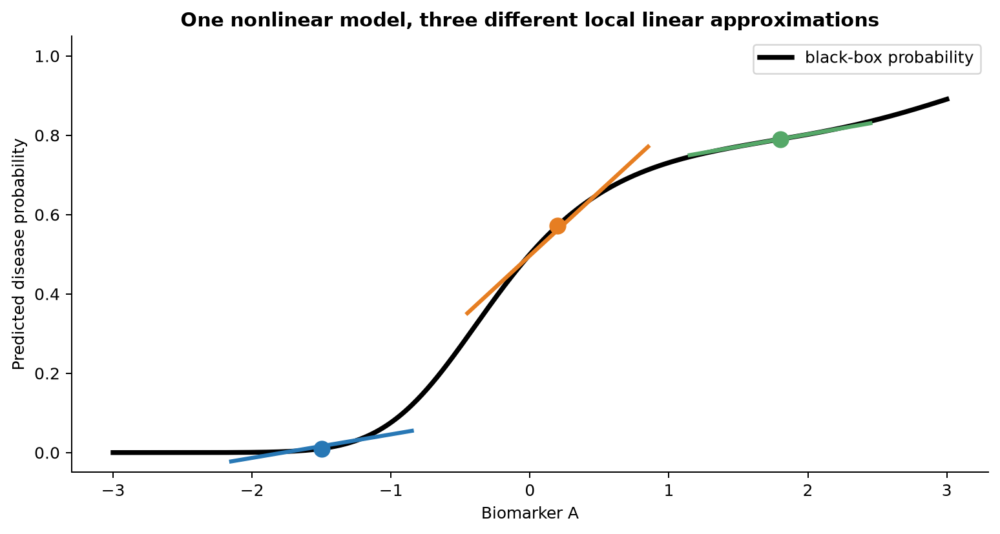
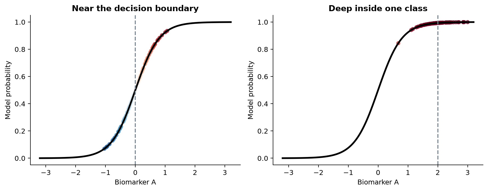
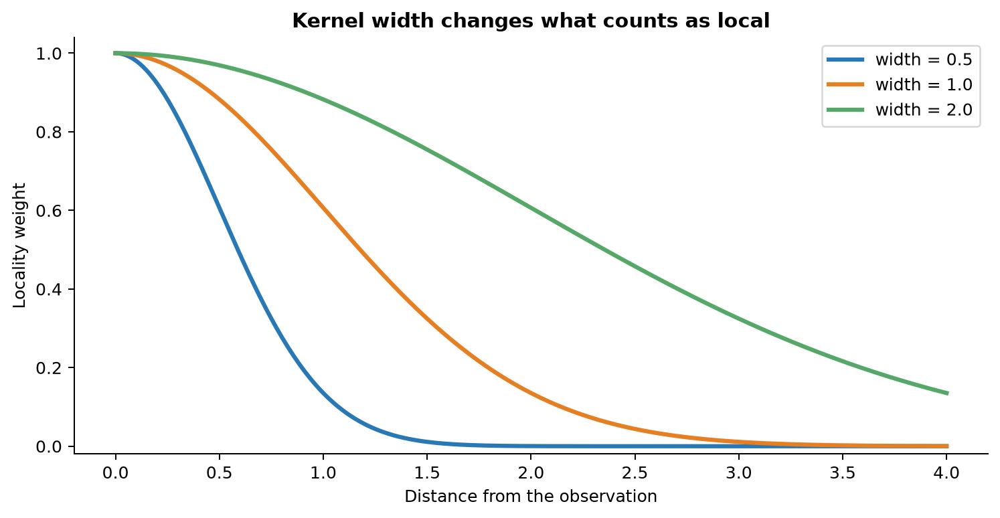
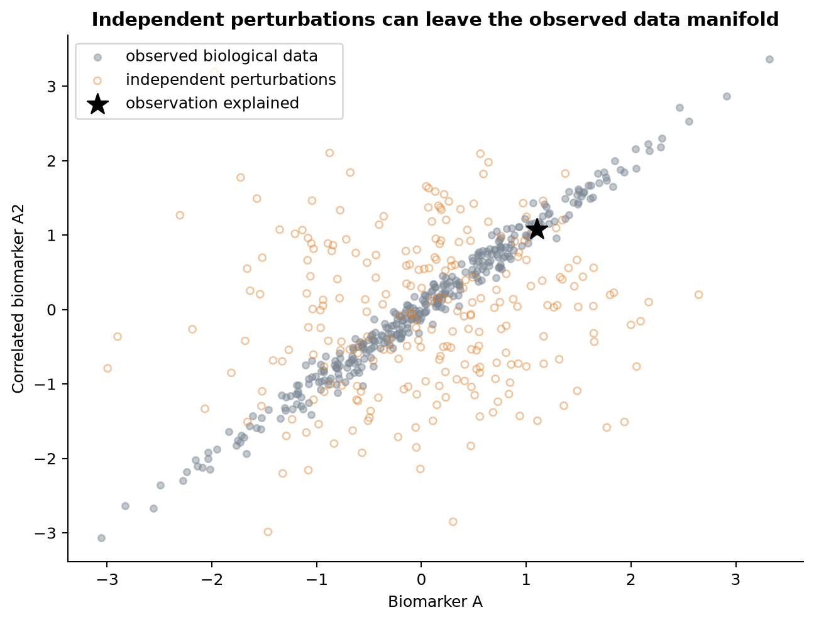
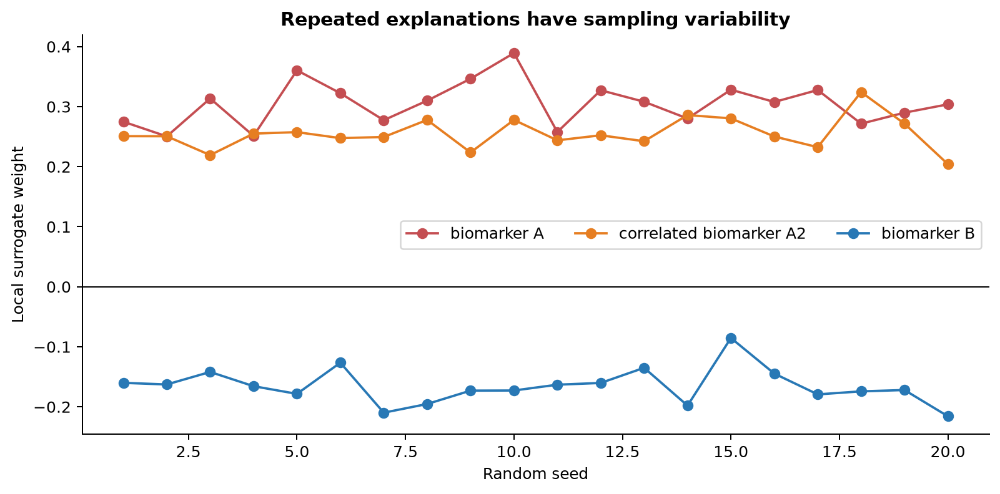
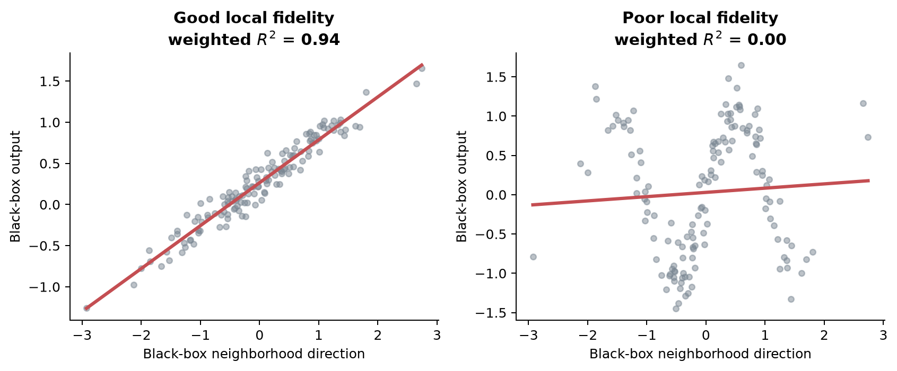

1 Understanding LIME
1.1 One difficult prediction
Suppose a gradient boosted tree has been trained to classify tumour samples. Its inputs include two biomarkers, an inflammatory marker, age, and several laboratory measurements. For patient A it reports a probability of malignancy of 0.82.
The number is useful, but it does not tell us what the fitted model was doing around this patient. Did the prediction depend mainly on biomarker A? Did biomarker B push in the opposite direction? Would a small change in the inflammatory marker alter the prediction, or is the model almost flat there?
These questions concern one observation. They differ from asking which features matter most on average across the entire dataset. LIME is a local explanation method. It does not replace the fitted model. It constructs a simple local surrogate model that behaves similarly to the fitted model near the observation being explained.
1.2 Local is not global
A nonlinear model can be pictured as a curved prediction surface. Every position on the surface represents a combination of two biomarker values. Colour represents the model’s predicted disease probability.

The left panel of Figure 1.1 shows the whole fitted surface. No single plane can reproduce all its bends. The circle selects a small region around patient A. In the right panel, straight contour lines approximate the surface within that region. Those lines would be wrong in much of the left panel, but global accuracy is not their job.
This distinction is the basis of LIME. The original model may be highly nonlinear. A linear surrogate can still be useful when it only has to describe a small neighborhood. A local explanation should never be promoted silently into a global claim.
1.3 The LIME process
The method can be followed as six connected stages.

1. Choose an observation. Patient A has a fixed set of measured values and a black-box probability of 0.82. LIME explains this prediction, not every prediction made by the model.
2. Generate modified observations. LIME creates many artificial rows by changing the feature values. These rows are probes. They let us ask how the fitted model behaves when its inputs vary. They are not newly observed patients.
3. Obtain predictions from the original model. Every artificial row is sent through the already fitted model. LIME uses the model’s output, not the true disease status of these artificial observations.
| Observation | Biomarker A | Biomarker B | Model probability |
|---|---|---|---|
| patient A | 0.65 | -0.25 | 0.82 |
| artificial 1 | 0.51 | -0.18 | 0.73 |
| artificial 2 | 0.77 | -0.34 | 0.87 |
| artificial 3 | 0.30 | 0.11 | 0.61 |
For classification, the useful output is usually a predicted probability for one class. For regression, it is the fitted numerical response. The artificial rows have no observed outcomes, so class labels such as malignant and benign cannot be the response of the surrogate.
4. Give nearby observations more influence. An artificial observation very similar to patient A is more relevant to the local question than one far away. LIME therefore gives nearby rows large weights and distant rows small weights. Point size in the lower-left panel of Figure 1.2 represents this influence.
5. Fit a simple model. For tabular LIME, the surrogate is commonly a sparse weighted linear regression. Its response consists of probabilities such as 0.61, 0.73, 0.82, and 0.87. It is not fitted to zero-one disease outcomes. This is why a linear regression appears inside a classification explanation: it approximates the classifier’s probability surface.
6. Interpret the local surrogate. The surrogate assigns a weight to each selected feature. The sign indicates which direction the feature moves the surrogate’s prediction for the chosen class. The magnitude describes its influence in this particular local approximation.

In Figure 1.3, high biomarker A and low biomarker B support the model’s malignant prediction. Age has little influence in this neighborhood. These weights are not coefficients from the original boosted tree. They are not causal effects. They describe a separate simple model fitted to mimic the original model around patient A.
1.4 Why a linear surrogate can describe a nonlinear model
The word linear describes the surrogate, not the original model. A small portion of a curved probability function can often be approximated by a line. Move to another part of the curve and a different line is needed.

The three colored lines in Figure 1.4 all explain the same black-box model. The left explanation is almost flat. The middle one has a steep positive slope. The right one rises more gently. None is a contradiction. Each describes a different local region.
This argument has a limit. Some neighborhoods contain sharp thresholds, several interacting boundaries, or other behaviour that a plane cannot reproduce. LIME can still return coefficients in that situation. The existence of coefficients does not prove that the local surrogate is faithful. Its fit must be checked.
1.5 Different observations can have different explanations
Because the fitted surface changes from place to place, two samples can have different explanations even when their predicted probabilities are similar. Biomarker A may receive a positive local weight for one sample, a small weight for another, and a negative weight where the surface bends back. The corresponding value for biomarker B can change at the same time because the model contains an interaction.
A LIME weight therefore belongs to a feature, an observation, a selected class, a perturbation procedure, and a neighborhood definition together. Removing any of that context changes what the number means.
1.6 Near and far from a decision boundary
The location of the observation also affects how informative a local explanation can be.

Near the boundary in the left panel of Figure 1.5, small changes in the biomarker produce a wide range of model probabilities. The surrogate can estimate a clear local direction. Deep inside the predicted class in the right panel, almost every artificial observation receives a probability near one. A nearly flat explanation is accurate there, but it says little about what would eventually make the prediction cross the boundary. LIME describes the model near the point. It does not automatically search for the nearest way to change the decision.
1.7 What model agnostic means
LIME needs a route from inputs to predictions:
input data → fitted model → predicted probability or numerical response
It does not need the model’s tree splits, coefficients, gradients, neural network weights, or training algorithm. The same general procedure can therefore probe XGBoost, random forests, support vector machines, and neural networks. This is the meaning of model agnostic.
The prediction function still matters. A classifier must return probabilities with columns in a known class order. A preprocessing pipeline must apply exactly the same transformations during explanation as it did during model fitting. Model agnostic does not mean interface agnostic.
1.8 Sparse explanations and fidelity
A local linear model with 100 displayed coefficients is rarely a useful explanation. LIME usually selects a small number of features or the user requests a maximum number. This creates a tradeoff.
Fewer features make the explanation shorter and easier to communicate.
More features may reproduce the black-box predictions more accurately in the chosen neighborhood.
The degree to which the surrogate reproduces the original model nearby is called local fidelity. A five-feature explanation with strong local fidelity may be useful. A three-feature explanation with poor fidelity is simple but misleading. The practical chapter shows how both R and Python report a local score.
1.9 Classification, multiclass models, and regression
For binary classification, LIME approximates the predicted probability for a selected class. An explanation for malignancy says which local features support or oppose the model’s malignancy probability.
For multiclass classification, an explanation is attached to one class at a time. A gene-expression profile may be classified as one of several cell types. Features supporting the T-cell probability need not be the same as those opposing the B-cell probability. Software may default to the most probable class or to a numerical label, so the class must be checked explicitly.
For regression, the target is the model’s numerical prediction. A model might predict a cytokine concentration, tumour volume, or continuous drug response. LIME fits the same kind of local surrogate to those predicted numbers.
1.10 Interpretable representations
The black box and the explanation do not always use the same representation. LIME calls the human-facing version the interpretable representation.
For tabular data, a continuous measurement can be displayed as a condition such as biomarker_A > 2.3 even though the fitted model received a numerical value. For text, interpretable features commonly indicate whether words or tokens are present. Artificial documents are made by hiding tokens. For images, interpretable features are usually connected regions called superpixels. Artificial images are made by masking selected superpixels.
This module focuses on tabular biological data. Text and image LIME use the same broad logic, but their perturbations, distances, and interpretable features are different.
1.12 When LIME is useful
LIME is useful when the aim is to understand individual predictions from a complicated model. It can help check whether a model uses biologically sensible variables for a particular sample, investigate an unusual or incorrect prediction, compare local behaviour across patients, and communicate one prediction with a small set of features. It is also useful when the model can only be accessed through a prediction function.
LIME can support model debugging. If laboratory batch indicators repeatedly dominate individual explanations, the fitted model may have learned an unwanted shortcut. That observation is a reason to investigate the data and model. It is not evidence that LIME itself has corrected the problem.
1.13 When LIME should be used carefully
1.13.1 A local explanation is not global importance
A feature that matters near one patient may be unimportant across most patients. Conversely, a globally important feature can have little effect in a flat local region. Many local explanations can be summarized, but one explanation alone cannot establish population-wide importance.
1.13.2 The neighborhood is chosen by the algorithm
The definition of nearby is not given by nature. It depends on feature scaling, distance, kernel width, discretization, and sampling. Changing those choices can change the explanation.

The narrow curve in Figure 1.6 asks a very local question. The wide curve asks the surrogate to cover a broader region. Neither is universally correct. The width must be judged in the context of the data and the local fit.
1.13.3 Artificial observations may be unrealistic
Biological predictors often move together. If two biomarkers are tightly correlated, sampling them independently can create combinations that are rare or impossible in real samples.

In Figure 1.7, the fitted model is queried well outside the observed data manifold. Its predictions there may be arbitrary extrapolations. LIME then learns from those predictions. The problem should be inspected rather than assumed away.
1.13.5 Sampling introduces variability
LIME’s artificial neighborhood is random. Repeated runs can produce different selected features and weights.

Setting a random seed makes one run reproducible. It does not remove the underlying sensitivity. Repeating an explanation is a direct way to measure it.
1.13.6 Poor local fidelity weakens the explanation

The right panel of Figure 1.9 still has a fitted line and coefficients. They should not be interpreted strongly because the line does not reproduce the black-box outputs. Fidelity is an essential diagnostic, not an optional decoration.
1.13.7 High-dimensional biological data needs additional care
Gene expression, methylation, and proteomics datasets can contain thousands of correlated predictors. In high dimensions, distances become less discriminating, sparse feature selection becomes unstable, and independently generated rows can move far from the biological manifold. Computation also grows because every perturbation must be passed through the model.
LIME is not automatically invalid for omics data. It does require stronger checks. Useful options include explaining a biologically meaningful lower-dimensional representation, grouping related variables, using a perturbation generator suited to the data, checking stability across seeds and locality settings, and comparing the result with another interpretation method. If a model was trained on transformed components, explaining the raw genes requires a prediction pipeline that performs the transformation. A label attached to a transformed component should not be presented as if it were a measured gene.